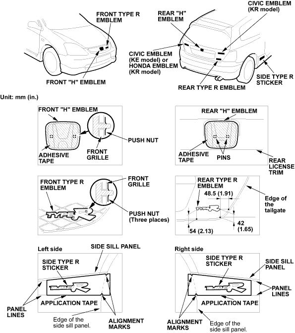

Exterior Trim
Emblem/Sticker Replacement
|
20-12 |
|
NOTE: When removing the emblem/sticker, take care not to scratch the body.
- To remove the front ''H'' emblem and front TYPE R emblem, remove the front bumper, refer to the 2001 Civic Shop Manual Supplement, P/N 62S5A21 (see page 20-8).
- Clean the bonding surface with a sponge dampened in alcohol. After cleaning, keep oil, grease and water from getting on the surface.
- Apply the emblem/sticker, where shown. When installing the side TYPE R sticker on the side sill panel, align the application tape with the edge of the side sill panel, then press the sticker into place, and remove the application tape.

- After installing the front ''H'' emblem and front TYPE R emblem, reinstall the front bumper.